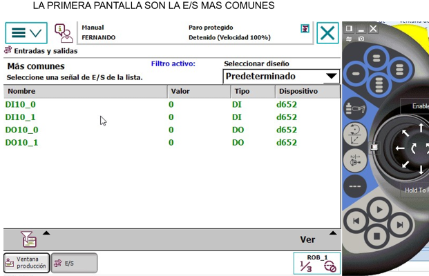
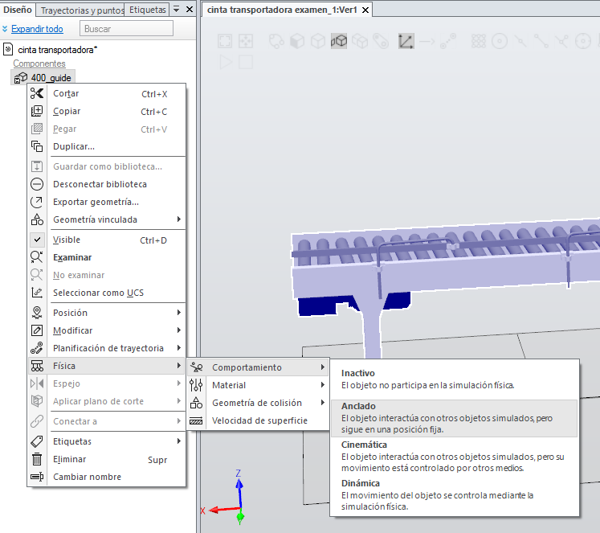

TEMARIO
 Temario
Temario
 Prácticas
Prácticas
 Migas de pan
Migas de pan
QUE ES UN ROBOT
- Aplicaciones
- Fabricantes
- Ejes
- tipos de robot según su movimiento
- Partes del Robot: controladora - Brazo robotico o manipulador, flexpendant
Módulo de entradas y salidas DSQC652
IDENTIFICAR EL MODULO DE ENTRADAS Y SALIDAS INCORPORADO EN EL irc5 y buscamos en internet dsqc652
OBSERVAMOS
Dos módulos de 8 entradas y 0V → XS12 Y XS13
Dos módulos de 8 salidas 0v y 24 v XAS14 y XS15
Fuente de alimentación 24v 0v 24V 0V XS16

****** HABILITAR EL MODULO DSQC652 DESDE LA FLEXPENDANT *******
nota: Para que aparezca la opción divice device-net se debe de tener habilitado desde el controlador, Industrial networks, diviceNet master slave

panel de control -> configuración ->devicenet device-> añadir -> usar valores de plantilla -> dsqc652 CAMBIAR ADRRES 63 por 10 -> reiniciar el controlador
en device net aparece el d652
CONFIGURAR ENTRADAS Y SALIDAS
panel de control -> configuración -> signal-> añadir -> nombre DI0; tipo de señal digital input ; asignado al dispositivo d652; device maping 0; nivel de acceso all
reiniciar el controlador
VER SEÑALES EN LA FLEXPENDANT
desde flexpendant ver entradas y salidas y fijarse en la opción entradas y salidas mas comunes, ¿como se pueden introducir entradas y salidas en esta opción?
añadir desde panel de control las ENTRADAS SALIDAS MAS COMUNES para verlas posteriormente en el menú de entradas-salidas
panel de control -> entradas y salidas-> seleccionar la E/S mas comunes -> aplicar



VER EL ESTADO DE LAS ENTRADAS Y SALIDAS
desde la página principal seleccionar entradas y salidas y vemos el estado de la entradas y salidas mas comunes

En ver podemos seleccionar las entradas, salidas, mas comunes …
si selección una entrada puedo simular el estado 1 o 0
en teclas programables puede generar la simulación de una entradas pag 39
panel de control→ teclas programables
****** HABILITAR EL MODULO DSQC652 DESDE ROBOTSTUDIO ******
si no incorporo Industrial networks -> 709-1 devieNet Master/Slave no aparece el menú device net device
si no lo hago la incorporación al inicio puedo hacerlo desde controlador CAMBIAR OPCIONES, después de añadir hay que reiniciar.
ahora si
desde controlador-> configuracion-> i/o System -> DeviceNet Device-> nuevo deviceNet device -> usar valores de plantilla -> seleccionar DSQ 652 cambiar adress 63 por 10
aceptar y reiniciar el controlador
añadir señales
controlador -> configuración -> i/o system -> signal-> botón derecha añadir signal ->nombre DI0; digital input; dsqc652; adress 0 … 16; nivel de acceso all
SIMULAR
Simulación -> entradas y salidas -> listas de usuario; editar listas-> nueva lista -> añadir las entradas y salidas creadas
Conexión de entradas y salida y FA


instrucciones relacionadas
WaitDI DI0,1; espero hasta que la entrada este a 1
SetDO DO0,1; activo la salida
SetDO DO0,0; desactivo la salida
IF DI10_0=1 AND DI10_1=1 path_10;
las dos siguientes instrucciones hacen lo mismo
MoveL \Conc Target_10,v1000,z100,MyTool;
SetDO DO10_1,1;
MoveLDo Target_10,v1000,z100,MyTool, DO10_1,1;
La salida se activa después de pasar por el punto de instrucción anterior
INICIO
SMARTCOMPONENTS - COMPONENTE INTELIGENTE
SMART COMPONENTS Practica guiada
La practica consiste cambiar una caja de lugar con un brazo robótico, cuando una fotocélula detecta que hay una caja el brazo robotica la traslada a una nueva posición.
Al llegar a su posición la caja es retirada y nos quedamos a la espera de una nueva caja.
Abre la una estación e incorpora el robot y mytool, conecta mytool al robot
Crea un cubo de 400,1000,250, cambia el nombre a mesa, y comportamiento físico anclado
Desplaza la mesa a 200 -500 0
Crea un cubo 100,100,100 cambia el color a rojo, y la física del comportamiento inactivo y hazlo invisible
Desplaza el cubo a 400,400,400
Desde modelado crea un componente inteligente llamado pick and play
Arrastra la mesa y la pieza dentro dentro del componente inteligente pick and play
Edita el componente inteligente pick and play, la primera vez, se abre directamente la edición
En componer añade el componente
source, completa el cuadro con source pieza, posición 400,400,400 y selecciona transient y fisica de comportamiento dinámico
En attacher; parent ( my tool) child (source /copy)
En detacher child (source /copy)
Sink object (source /copy)
En diseño crea
una entrada con el nombre sacar y selecciona restablecimiento automático para que se comporte con un pulsador.
una entrada con el nombre borrar y selecciona restablecimiento automático para que se comporte con un pulsador.
Una entrada con el nombre coger
Una entrada con el nombre soltar
Desde diseño o desde señales y conexión une
la entrada sacar con executed de source
la entrada borrar con executed de sink
la entrada coger con executed de attacher
la entrada soltar con executed de detacher
Incorpora el controlador a la estación
añádale 3 entradas digitales y 3 salidas digitales
añádele las salidas virtuales
DO_sacarCaja
DO_borrar caja
Desde simulación crea una lógica de estación
incorpora al controlador las 5 salidas
conecta las salidas del controlador con el componente inteligente pick and play
DO_sacarCaja con SacarCaja
DO_borrar caja con borrar Caja
DO_0 con coger
DO_1 con soltar
Realiza un programa en robotStudio para el siguiente funcionamiento de la instalación:
Pulsa en la salida Virtual DO_SacarCaja
Pulsa la Entrada DI_0
El robot se pone en marcha coge la caja y la desplaza 200mm,
Una vez situada la caja, pulsa borrar y la caja desparece
y así sucesivamente
Práctica:
Mejora la práctica anterior, incorporando un fotocélula que detecte la caja automáticamente.
Crear una cinta transportadora
Abrimos Robotstudio, e importamos desde biblioteca -> conveyor-> transportador guide


Desde la física de la cinta
- Comportamiento anclado
- 
- Seleccionamos permitir velocidad de superfice, le damos una velocidad y una direccion (valor en eje X)
Creamos un smartcomponent, arrastramos la cinta al smartcomponent

Añadimos al smartcomponent el componente fisica-> physycalControl
A las propiedades de physical control añadimos el objeto cinta transportadora

Desde diseño podemos crear una entrada que nos habilite la marcha de la cinta trasportadora

Por ultimo probar el funcionamiento con un cubo de 200*200*200 con física ->comportamiento-> dinámico
QUE ES UN ROBOT
- Aplicaciones
- Fabricantes
- Ejes
- tipos de robot según su movimiento
- Partes del Robot: controladora - Brazo robotico o manipulador, flexpendant